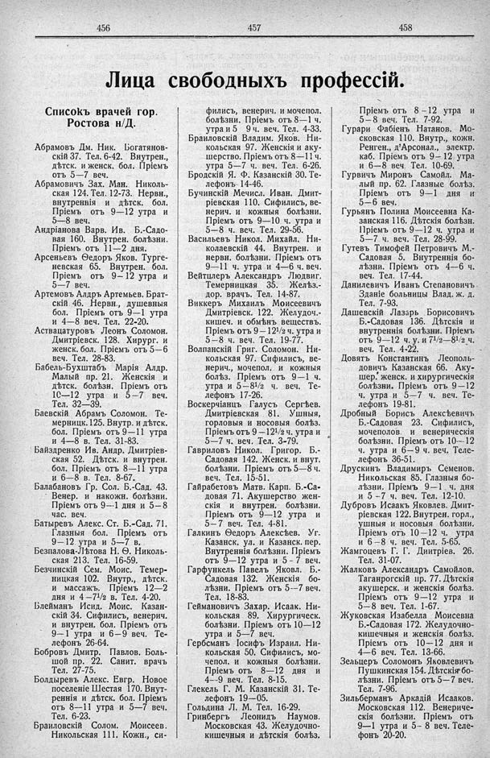

Лист источника 284
Скан

Распознанный текст
456 457 458
Лица свободныхъ профессій.
Списокъ врачей гор.
Ростова н/Д.
Абрамовъ Дм. Ник. Богатянов-
скій 37. Тел. 6-42. Внутрен.,
дѣтск. и женск. бол. Пріемъ
отъ 5—7 веч.
Абрамовичъ Зах. Ман. Николь-
ская 124. Тел. 12-73. Нервн.,
внутреннія и дѣтск. бол.
Пріемъ отъ 9—12 утра и
5—8 веч.
Андріанова Варв. Ив. Б.-Садо-
вая 160. Внутрен. болѣзни.
Пріемъ отъ 11—2 дня.
Арсеньевъ Ѳедоръ Яков. Турге-
невская 65. Внутрен. бол.
Пріемъ отъ 9—12 утра и
5—7 веч.
Артемовъ Алдръ Артемьев. Брат-
скій 46. Нервн., душевныя
бол. Пріемъ отъ 9—1 утра
и 4—8 веч. Тел. 22-20.
Аствацатуровъ Леонъ Соломон.
Дмитріевск. 128. Хирург. и
женск. бол. Пріемъ отъ 5—6
веч. Тел. 28-83.
Бабель-Бухштабъ Марія Алдр.
Малый пр. 21. Женскія и
дѣтск. болѣзн. Пріемъ отъ
10—12 утра и 5—7 веч.
Тел. 32—39.
Баевскій Абрамъ Соломон. Те-
мерницк. 125. Внутр. и дѣтск.
бол. Пріемъ отъ 9—11 утра
и 4—8 в. Тел. 31-83.
Байздренко Ив. Андр. Дмитріев-
ская 52. Дѣтск. и внутрен.
бол. Пріемъ отъ 8—11 утра
и 6—8 в. Тел. 8-67.
Балабановъ Гр. Сол. Б.-Сад. 43.
Венер. и накожн. болѣзни.
Пріемъ отъ 9--1 дня и 5—8
час. веч.
Батыревъ Алекс. Ст. Б.-Сад. 71.
Глазныя бол. Пріемъ отъ
9—12 утра и 5—7 в.
Безпалова-Лѣтова Н. Ѳ. Николь-
ская 213. Тел. 16-59.
Безчинскій Сем. Моис. Темер-
ницкая 102. Внутр., дѣтск.
и массажъ. Пріемъ 12—2
дня и 4—71/2 в. Тел. 4-20.
Блейманъ Исид. Моис. Казан-
скій 34. Сифились, венерич.
и внутрен. бол. Пріемъ отъ
9—1 утра и 6—9 веч. Те-
лефонъ 26-64.
Бобровъ Дмитр. Павлов. Боль-
шой пр. 22. Санит. врачъ
Тел. 27-75.
Болдыревъ Алекс. Евгр. Новое
поселеніе Шестая 170. Внут-
реннія и дѣтск. бол. Пріемъ
отъ 8—11 утра и 5—7 веч.
Тел. 6-23.
Браиловскій Солом. Моисеев.
Никольская 111. Кожн., си-
филисъ, венерич. и мочепол.
болѣзни. Пріемъ отъ 8—1 ч.
утра и 5 9 ч. веч. Тел. 4-33.
Браиловскій Владим. Яков. Ни-
кольская 97. Женскія и аку-
шерство. Пріемъ отъ 8—11 ч.
утра 5—7 ч. веч. Тел. 6-26.
Бродскій Я. Ф. Казанскій 30. Те-
лефонъ 14-46.
Бучинскій Мечисл. Иван. Дмит-
ріевская 110. Сифились, ве-
нерич. и кожныя болѣзни.
Пріемъ отъ 9—10 ч. утра и
5—8 ч. веч. Тел. 29-56.
Васильевъ Никол. Михайл. Ни-
колаевскій 44. Внутрен. и
нервн. болѣзни. Пріемъ отъ
9—11 ч. утра и 4—6 ч. веч.
Вейтцлеръ Александръ Людвиг.
Темерницкая 35. Желѣз.-
дор. врачъ. Тел. 14-87.
Виккеръ Михаилъ Моисеевичъ
Дмитріевск. 122. Желудоч.-
кишеч. и обмѣнъ веществъ.
Пріемъ отъ 9—121/2 ч. утра и
5—8 ч. веч. Тел. 19-77.
Волпанскій Григ. Соломон. Ни-
кольская 97. Сифилисъ, ве-
нерич., мочепол. и кожныя
болѣз. Пріемъ отъ 9—1 ч.
утра и 5—81/2 ч. веч. Те-
лефонъ 17-26.
Воскерчіанцъ Галусъ Сергѣев.
Дмитріевская 81. Ушныя,
горловыя и носовыя болѣз.
Пріемъ отъ 9—121/2 ч. утра и
5—7 ч. веч. Тел. 3-79.
Гавриловъ Никол. Григор. Б.-
Садовая 142. Женск. и внут.
болѣзни. Пріемъ отъ 5—8 ч.
веч. Тел. 15-51.
Гайрабетовъ Матв. Карп. Б.-Са-
довая 71. Акушерство жен-
скія и внутрен. болѣзни.
Пріемъ отъ 9—12 утра и
5—7 веч. Тел. 4-81.
Галкинъ Ѳедоръ Алексѣев. Уг.
Казанск. ул. и Казанск. пер.
Внутреннія болѣзни. Пріемъ
отъ 9—12 утра и 5 - 7 веч.
Гарфункель Павелъ Яковл. Б.-
Садовая 132. Женскія бо-
лѣзни. Пріемъ отъ 5--7 веч.
Тел. 18-83.
Геймановичъ Захар. Исаак. Ни-
кольская 89. Хирургическ.
болѣзни. Пріемъ отъ 10—12
утра и 5—7 веч.
Гербсманъ Іосифъ Израил. Ни-
кольская 50. Сифилисъ, мо-
чепол. и кожныя болѣзни.
Пріемъ отъ 8—12 дня и
4—9 веч. Тел. 8-15.
Глекель Г. М. Казанскій 31. Те-
лефонъ 19—05.
Гольдина Л. М. Тел. 16-29.
Гринбергъ Леонидъ Наумов.
Московская 43. Желудочно-
кишечныя и дѣтскія болѣз.
Пріемъ отъ 8—12 утра и
5—8 веч. Тел. 7-92.
Гурари Фабіенъ Натанов. Мо-
сковская 110. Внутр., кожн.
Ренген., д'Арсонал., электр.
каб. Пріемъ отъ 9— 12 утра
и 6—8 веч. Тел. 10-69.
Гурвичъ Миронъ Самойл. Ма-
лый пр. 62. Глазные болѣз.
Пріемъ отъ 9—1 дня и
5—6 веч.
Гурьянъ Полина Моисеевна Ка-
занская 116. Дѣтскія болѣзн.
Пріемъ отъ 9—12 ч. утра и
5—7 ч. веч. Тел. 28-99.
Гутевъ Тимофей Петровичъ М.-
Садовая 5. Внутреннія бо-
лѣзни. Пріемъ отъ 4—6 ч.
веч. Тел. 17-44.
Данилевичъ Иванъ Степановичъ
Зданіе больницы Влад. ж. д.
Тел. 7-93.
Дашевскій Лазарь Борисовичъ
Б.-Садовая 136. Дѣтскія и
внутреннія болѣзни. Пріемъ
отъ 9—12 ч. у. и 71/2—81/2 ч.
веч. Тел. 4-22.
Довятъ Константинъ Леополь-
довичъ Казанская 66. Аку-
шер. женск. и хирургическія
болѣзни. Пріемъ отъ 9—12
ч. утра и 5—7 ч. веч. Те-
лефонъ 19-81.
Дробный Борисъ Алексѣевичъ
Б.-Садовая 23. Сифилисъ,
мочеполов. и венерическія
болѣзни. Пріемъ отъ 10--12
ч. утра и 6—9 ч. веч. Теле-
лефонъ 36-51.
Друскинъ Владимиръ Семенов.
Никольская 85. Глазныя бо-
лѣзни. Пріемъ 9—1 ч. дня
и 5 –7 ч. веч. Тел. 12-10.
Дубровъ Исаакъ Яковлев. Дмит-
ріевская 122. Внутрен. горл.,
ушныя и носовыя болѣзни.
Пріемъ отъ 10—12 ч. утра
и 6—8 ч. веч. Тел. 5-65.
Жамгоцевъ Г. Г. Диитріев. 26.
Тел. 31-07.
Жалковъ Александръ Самойлов.
Таганрогскій пр. 77. Дѣтскія
акушерск. и женскія болѣз.
Пріемъ отъ 9—12 утра и
5—8 веч. Тел. 1-67.
Жуковская Изабелла Моисевна
Б.-Садовая 172. Желудочно-
кишечныя и женскія болѣз.
Пріемъ отъ 10—12 дня и
4—6 веч. Тел. 13-66.
Зельцеръ Соломонъ Яковлевичъ
Пушкинская 154. Дѣтскія бо-
лѣзни. Пріемъ отъ 5—7 веч.
Тел. 7-96.
Зильберманъ Аркадій Исааков.
Московская 112. Венериче-
скія болѣзни. Пріемъ отъ
9—1 утра и 5– 8 веч. Теле-
фонъ 20-20.